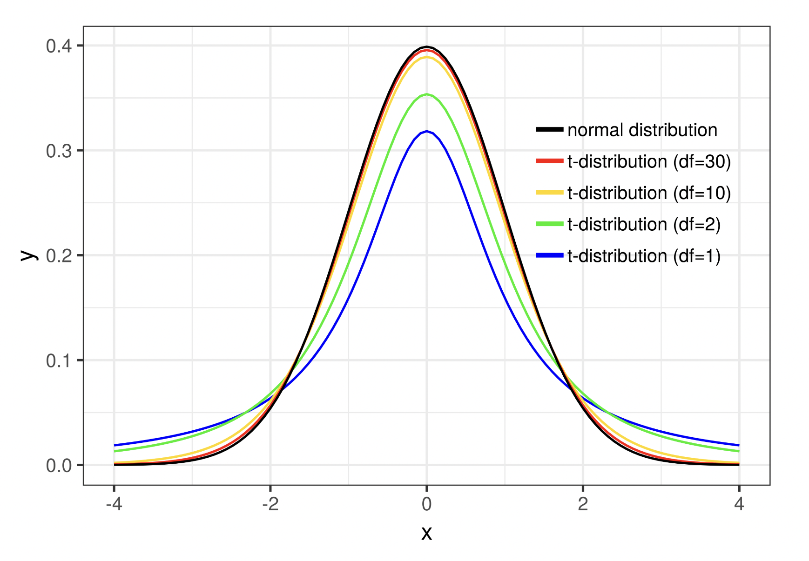
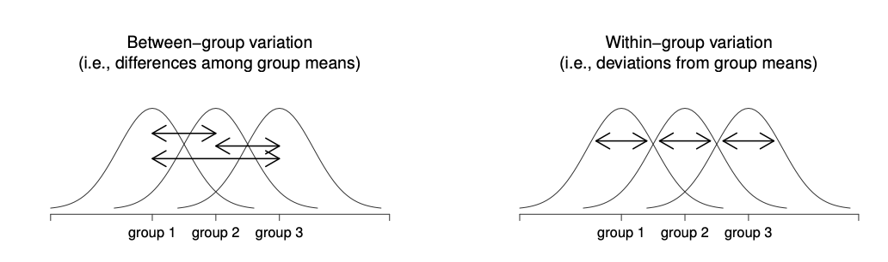
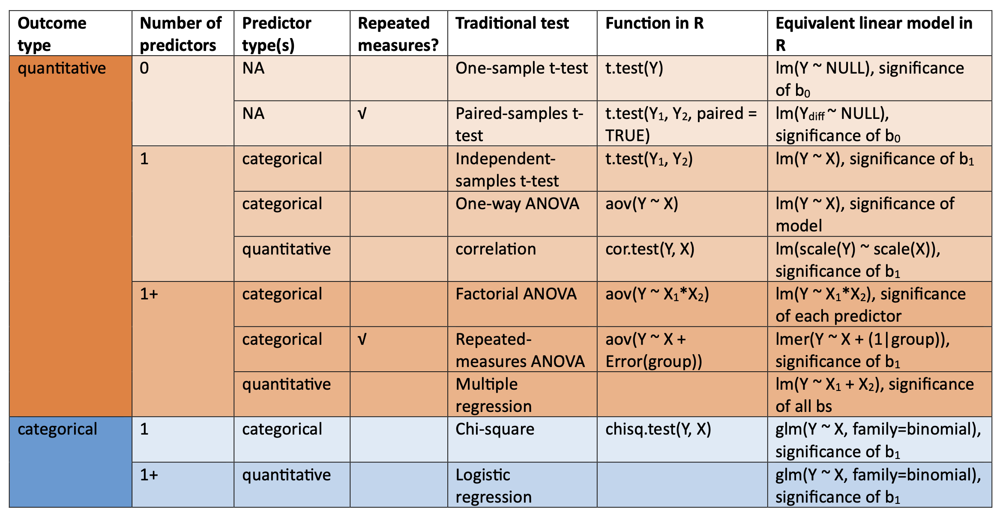

Previous: Chapter 19 - Model Bias
# Run this first so it's ready by the time you need it
install.packages("dplyr")
install.packages("ggformula")
install.packages("supernova")
install.packages("interactions")
library(dplyr)
library(ggformula)
library(supernova)
library(interactions)
trackscores <- read.csv("https://raw.githubusercontent.com/smburns47/Psyc158/main/trackscores.csv")
trackscores$track_training <- as.character(trackscores$track_training)
trackscores$weight_training <- as.character(trackscores$weight_training)
Chapter 20 - Traditional Statistical Tools#
In this course you have spent a long time learning about how to make predictions and do inference with the general linear model. This actually makes you rather unique in terms of how you’re getting started with statistics. Most students instead learn an assortment of different statistical procedures like the t-test, ANOVA, chi-square, etc. as their introduction to data analysis. Indeed many practicing researchers also use these tools exclusively.
So why learn the GLM at all if not everyone uses it? There are two pedagogical reasons for why this course emphasized this method instead of the traditional content:
Traditional tools require learning how to do hypothesis testing first - Traditional methods fundamentally depend on Null Hypothesis Significance Testing. They start with defining a null hypothesis and cannot be interpreted without computing a t/F score and finding a p-value. This means to learn how to use these tools, students first have to learn about sampling distributions and significance testing. This is a rather abstract thing to learn first in one’s statistics journey and impedes understanding for many people. This leads them to using intellectual short cuts like “only care about p < 0.05” despite the dangers of overrelying on that number.
Traditional tools are more variable, harder to remember - When first starting out, the list of all the common statistical tools is often daunting. They are calculated all different ways, with different names, applied to different situations, and it’s hard to remember what goes where. In contrast, the GLM is ultimatly one tool: \(Y_i = b_0 + b_1X_i + e_i\). How many predictors you add to the equation and how you interpret the coefficients varies depending on your use situation, but just knowing about this one equation gets you 80% of the way there. This makes it a better starting point to build conceptual understanding.
Despite the advantages of the GLM however, many people still use the traditional tools. Thus, it is good for you to be able to identify them and understand how they map onto what you have learned with the GLM. Ultimately, the GLM and these tools will give you the same answer and you can choose which you prefer in your own research. Knowing both will enable you to read and understand research reports no matter what method the authors used. You may even find that most of these tools build on concepts you’ve already learned. They’re just a different way of showing that information.
20.1 One-sample t-test#
Previously in chapter 11, we were introduced to the idea of a t-test. To explain it in more depth, let’s start with the one-sample t-test.
Let’s say you are a track coach and you’re assessing the progress of your runners’ training. They all recorded their best times for running the 400m when they initially joined the team. Now after a month of training with track drills, you want to know if they, as a group, have improved.
Here is some data from your team. We will filter it down to just those scores at tryouts and 1 month later at the first meet, then calculate their change in running times. Negative scores mean they got faster (less time to complete the 100m), positive scores mean they ran slower.
#take a look at how this dataset was organized
head(trackscores)
tryout_scores <- filter(trackscores, session=="tryouts", condition=="track-training")
meet1_scores <- filter(trackscores, session=="meet1", condition=="track-training")
change_scores <- meet1_scores$time - tryout_scores$time
If our question is restricted to just our team of runners and no one else, we can figure out their improvement really easily. We simply find the mean of their change scores:
mean(change_scores)
Great! This number means that, on average, our team ran faster than before after training for a month. If we only care about evaluating our current team, we can stop here and don’t need to use any more statistics.
But let’s say our question goes beyond just our team. If we were to recruit new runners the following year, would they also improve their scores with this training regimen? Is it good enough to use for everyone? Now we are hypothesizing about data we don’t have. At this point we need inferential statistics, and a one-sample t-test can help.
A one-sample t-test answers a particular kind of question: is the mean of some data \(\bar{X}\) likely or unlikely to be from a population with a specific \(\mu\)? In other words, if we think the population \(\mu\) is a particular value and our data sample is drawn from that population, is it reasonable or surprising to find that our sample’s mean is the value we measured?
In the case of our specific example: is our data sample likely to happen even in a population of runners who on average didn’t improve?
In order to do a one-sample t-test to answer this question, we first need to set down our idea about what \(\mu\) should be. This is specifying the null hypothesis. For our particular example, the data we are evaluating are improvements in running time. We want to know if these data came from a population of scores where there’s no improvement. In such a population some people might run a bit faster than their initial time, some a bit slower, but on average there’s no change. Thus, to set our null hypothesis:
When we calculated our data sample earlier, it was -0.349, not 0. Does that mean we can conclude these runners did not come from a population of no improvement? Not necessarily. Remember, due to random sampling, it is frequently possible to get a sample mean that is not the same value as the population mean:
set.seed(10)
sim_sample <- rnorm(10, mean=0, sd=1) #random sample of 10 scores from population with mean 0
mean(sim_sample)
Thus we need a way of refining our question: given a population \(\mu\) and an expected variation among samples from that population, is our sample really surprising or not?
Enter the t-value. It is a way of scaling the difference between a sample and hypothesized population mean by the standard error of that population. For a one-sample t-test, this is calculated as:
If you recall from chapter 15, SEM in turn is calculated as:
All this together means that a t-value will be larger when there’s a bigger difference between our sample mean and the hypothesized population mean, or when the standard error is smaller.
The type of t-score we can get falls somewhere in the t distribution that we first encountered in chapter 16:
The cumulative probability outside of our t-value is the corresponding p-value for that t-score. The smaller the p-value, the more surprising it is to get a t-value like ours when the true t in the population is 0. If the associated p-value is <0.05, we would decide it’s so surprising that our sample probably came from a different sort of population instead - one with some alternative \(\mu\) that is not 0.
R provides us with a built-in function to quickly compute a one sample t-test:
t.test(change_scores)
The output of this function gives us information about the calculated t-score (-1.9294), the degrees of freedom of the test (9), and the p-value (0.08575). It also gives us a 95% CI for our estimate of the mean, [-0.758, 0.060]. Note that a t-value can be positive or negative, signifying if our sample mean is higher or lower than the hypothesized population mean.
Based on these results, there is not enough evidence to reject the null hypothesis that our training regimen results in no improvement. In APA format, we would write these results as “There was no significant improvement in running time for this sample of runners (t(9) = -1.93, p = 0.086).”
The different parts of doing a t-test (calculating a mean, null hypothesis, standard error, and p-value) are all concepts you’ve learned before. For this reason, a t-test is actually just another way of getting to the same answer as we previously did with the general linear model. Check out the t and p values in the model output below, and compare them to the results of the above t-test:
summary(lm(change_scores ~ NULL))
In the null model of the GLM framework, we are estimating the sample mean as \(b_0\) and evaluating if it is significantly different from 0. In a one-sample t-test, we are evaluating whether a sample mean \(\bar{X}\) is significantly different from the null hypothesis \(\mu = 0\). These are the exact same question, just posed different ways. Thus, you can get the same result using a null model form of the GLM or the one-sample t-test!
However, we should also point out that in the null model, the significance of \(b_0\) is specifically compared in the context of a null hypothesis where \(\beta_0 = 0\). In the one-sample t-test, we can be more general that this. We don’t have to restrict ourselves to a null hypothesis of 0. For instance, let’s imagine that instead of running improvement, we are interested in whether our team’s new running times are significantly better than the Division III track and field recruiting cut off of 51.76. First we calculate the mean of everyone’s new running times:
mean(meet1_scores$time)
Then we specify a null hypothesis:
This is a different null hypothesis than before. Now, we are wondering if our sample is likely to come from DIII track and field athletes, or if we should conclude they come from an even faster population.
Then we run the t-test to see if our sample mean is significantly different from this hypothesized population mean. To specify a null hypothesis in a t-test that is different than 0, add the mu= argument to the t.test() with this specific null hypothesis value.
t.test(meet1_scores$time, mu=51.76)
Based on these results, our sample mean of 48.354 would be very unusual if it were drawn from a population with \(\mu = 51.76\) (p < 0.001). We reject this null hypothesis in favor of the alternative hypothesis that our team is from a faster population.
20.2 Independent-samples t-test#
A one sample t-test is used when you have one group of data and want to understand how likely it is that that one group came from a particular population. If you have two separate groups of data and want to be able to distingush them from each other, this calls for a different kind of t-test called an independent samples t-test or two-sample t-test.
Let’s say you’re still the track coach, but this time you want to compare how two different kinds of training impact your athletes. This time, you have half the team run track drills for a month and half the team do weights in the gym. Afterwards, you assess their running time on the 400m at their first meet. In this situation you no longer have one group of data like last time. You have two groups who went through different experiences that might make them different from each other.
track_training <- filter(trackscores, session=="meet1", condition=="track-training")
weight_training <- filter(trackscores, session=="meet1", condition=="weight-training")
An independent samples t-test answers the question “are these two groups likely drawn from the same population?” The null hypothesis of this question would be:
Where \(\mu_1\) is the population from which group 1 came, and \(\mu_2\) is the population from which group 2 came. The alternative hypothesis, then, is that they come from different populations.
An independent samples t-score is calculated a bit differently than a one-sample t-score. This one comes out to:
where \(s_p\) stands for the pooled standard deviation, a way of combining the standard deviations of two samples:
While this equation is more complicated, in general this t-score gets larger based on the same factors as the one-sample t-test. You will get a larger t-score, and thus more likely to reject the null hypothesis, if there is a large difference between the group means or if the sample sizes are large.
In R we can use the same t.test() function to do an independent-samples t-test. We just need to include more arguments. Specifically, we need to pass the separate groups to compare as separate vectors, and then add a var.equal= flag to tell this function to use the pooled variance.
t.test(track_training$time, weight_training$time, var.equal=TRUE)
Based on this result, what would you conclude about which populations each group likely came from?
Again, it is possible to get this same result using the GLM approach we already know. However we have to reshape our data a bit in order to make this possible. In the t.test() command above we wanted to compare values on the outcome variable for the two different groups, so we needed to divide the data in this variable into two separate vectors. To use lm(), we don’t separate our data into different datasets. We merely include another variable that stores information about which group is which.
#filtering to every time score during meet1, for track-training or weight-training athletes
meet1 <- filter(trackscores, session=='meet1',
(condition=='track-training' | condition=='weight-training'))
#fitting glm version of test
summary(lm(time ~ condition, data = meet1))
#visualizing group differences
gf_jitter(time ~ condition, data = meet1, size=3, color = ~condition, width=0.1) %>%
gf_summary(fun.data = "mean_cl_boot", size = 2, color = 'black')
20.3 One-way ANOVA#
T-tests allow you to investigate differences in means between a population and one group of data, or two separate groups. Beyond that, you might encounter a situation where you want to investigate differences between more than two groups. E.g., instead of comparing just the athletes who did track training vs. weight training, you also have athletes who did neither type or both types of training.
There’s no t-test that helps you analyze more than two groups. Instead, we need to expand into a different kind of test known as a one-way ANOVA.
To start, we recognize that we’re interested in comparing the average 400m running time for the 4 different training conditions. In that sense, we’re still hypothesizing about differences in means, but between several groups. Specifically, it would be pretty uninteresting if no type of training made any difference in running time and all athletes were from the same population. Thus, our null hypothesis is:
Where each \(\mu\) is the population from which that group number came. In contrast, the alternative hypothesis is that at least one of the four different training conditions results in different running times. We’re not trying to predict which group(s) is different from which other group(s), just that at least one of those equal signs in the null hypothesis is not true.
Because there are many different ways the null hypothesis could be false (1 =/= 3, 2 =/=3 & 4, etc.), this null hypothesis isn’t possible to test in the t-test framework. There isn’t one group difference to compare to one population parameter. Instead we use an ANOVA procedure, which stands for Analysis of Variance.
The way this works is by looking at variation in data and figuring out how much variation is within a group of data, vs. between different groups.
To quantify variation, we’ve used the idea of sum of squares before. We can use it again here to calculate new* kinds of sum of squares to represent, instead of deviations between data and model predictions, deviations between groups or within groups. We’ll denote this as \(SS_w\) for the within-group variation, where \(\bar{Y}_g\) is the mean of some group G:
And here is \(SS_b\) for the between-groups variation, where \(\bar{Y}\) is the mean of all data regardless of group (the Grand Mean):
Now that we’ve defined these different types of sum of squares, we can ask a specific mathematical question: is there more variation between the groups of data than within a group? Are the differences between individual scores because of which group they belong to, or just randomness? A ratio is a good way to represent this question:
But wait, if we’re calculating sum of squares then we know it’s problematic to not consider the size of our dataset. Thus we should convert these values to mean squared error by dividing SS by the degrees of freedom. As usual, the degrees of freedom corresponds to the number of ways data can vary once we have some existing information about it. For the within-groups variability, what we’re calculating is the variation of the individual observations (N data points) around the group means (all the \(\bar{Y}_G\) estimates). In contrast, for the between groups variability, we’re interested in the variation of the group means (G data points) around the Grand Mean (one \(\bar{Y}\) estimate). Therefore, the degrees of freedom here are:
The ratio of mean squared differences then is:
This ratio has a specific name: it is the F-ratio or the F-statistic (sound familiar?).
That’s all a one-way ANOVA does: it calculates an F-statistic to compare between to within-group variation. If the value of this F-statistic is sufficiently large, that means the differences in the group means are so large that we’d be very surprised to hear they were actually sampled from the same population. We’d reject the null hypothesis in favor of an alternative, that at least one came from a different population.
That brings us to doing a one-way ANOVA test in R. There are a couple different implementations of ANOVA tests in R. The most basic is built into base R, called aov(). To use this one, you no longer need to save the data for the different groups into different vectors - we can keep it in one dataset like with a GLM model and simply pass a formula to ask how the outcome variable varies as a function of group.
#choosing all running times at meet1, regardless of condition
meet1 <- filter(trackscores, session=='meet1')
#running one-way ANOVA test
anova_results <- aov(time ~ condition, data = meet1)
anova_results
#visualizing group differences
gf_jitter(time ~ condition, data = meet1, size=3, color = ~condition, width=0.1) %>%
gf_summary(fun.data = "mean_cl_boot", size = 2, color = 'black')
The output of this code tells you \(SS_b\) (Sum of Squares in the ‘condition’ column) and \(SS_w\) (Sum of Squares in the ‘Residuals’ column). To get the corresponding F-statistic and p-value, wrap this command in the summary() function:
summary(anova_results)
Since this p-value is <0.05, we’d reject the null hypothesis that all groups of athletes come from the same population. At least one of the group means is sufficiently different from at least one other that we decide there are different populations involved here - meaning, type of training matters for running time. In APA format, we’d write this as “there was a significant effect of training type on running time F(3,36) = 7.035, p < 0.001.”
Now, at this moment we should pause so I can let you know that I actually lied to you earlier. \(SS_b\) and \(SS_w\) aren’t new kinds of sum of squares at all. To see what I mean, here’s the \(SS_{model}\) and \(SS_{error}\) from a GLM with the same formula:
glm_results <- lm(time ~ condition, data = meet1)
supernova(glm_results)
\(SS_b\) is the exact same value as \(SS_{model}\), just with a different name. Both refer to the amount of variation explained by this grouping variable. Likewise, \(SS_w\) is the same as \(SS_{error}\), the amount of variation left unexplained. The F-statistic and p-value are also the same. That’s why this is called an ANOVA table - it’s the results of an ANOVA test. If we output the summary of a GLM model with condition predicting time:
summary(glm_results)
That F-statistic and p-value for the significance of the whole model is also the same. Thus, a one-way ANOVA test is the exact same as testing a whole GLM model with multiple categorical predictors.
Now there are some differences between a one-way ANOVA and GLM on the other kinds of information you get from the model. Specifically, the significance of differences between particular pairs of groups. At baseline, an ANOVA test can’t tell you anything about this. It only tests the null hypothesis that all groups are the same. Any one pair being different results in rejecting the null hypothesis, but you don’t know which pair(s) of groups were different. To get this answer, you need to perform an independent-samples t-test on each unique pair. Because this involves many tests, you also have to correct for multiple comparisons.
In R, you can do this with the function pairwise() in the supernova package, which takes an object holding the results of an ANOVA test and returns the significance of the difference between every possible pair of groups:
pairwise(anova_results)
The method of multiple comparison correction that pairwise() is using is called Tukey’s Honestly Significance Differences, which adjusts the calculated p-values up rather than pulling down the critical p-value.
Now compare these numbers to those in the summary report of the GLM model (where “both-training” is the reference group because it is first in the alphabet). For instance, look at the difference between the “no-training” and “both-training” conditions here, and then look at the estimate of the effect of “no-training” in the GLM output. Both of these numbers are the same (2.038), indicating that both methods are finding the difference in means between the “both-training” condition and the “no-training” condition. However, the p-values for these lines are different.
Why is that? The reason is, with the GLM model you don’t need to do multiple comparisons correction. This is because a multiple regression is just one test. It calculates the standard error of each coefficient at once, in the context of the other predictors. This means it’s essentially already correcting for the fact that there are other coefficients to test. Further, it is only doing this correction for 3 comparisons with the reference group (“both-training” against the other three).
In contrast, with the pairwise tests after the ANOVA, these are all done independently on separate subgroups of data. In addition, all 6 possible pairwise comparisons are done. With more comparisons, that means you have to correct the p-value by more in order to keep the family-wise error rate at \(\alpha = 0.05\). With more correction, it is harder to find any one comparison as significant. This is why the comparison between “both-training” and “track-training” is significant in the GLM (effect of “track-training”, p = 0.0133) but not significant in the pairwise table of the ANOVA results (p = 0.0614). However, this is also why the pairwise table has comparisons for conditions like “weight-training” and “track-training”, while the GLM doesn’t. To get that result with a GLM approach, one of those conditions would need to be treated as the reference group.
For this multiple comparisons reason, it is often better to use a GLM than a one-way ANOVA.
20.4 Factorial ANOVA#
Of the traditional tools we’ve covered so far in this chapter, you can probably detect a general trend. So far we’ve looked at a fairly simple experimental design: each person falls into only one of several groups, and we want to know whether these groups have different means on some outcome variable. This assumes that there is only one variable that matters for differences in the outcome value - which of these groups someone is in.
But in the multiple regression version of the GLM framework, we learned that multiple different predictor variables can have separate effects on an outcome. They can even interact with each other, such that the effect of one predictor changes as a function of the value of another predictor. This might be a better way of understanding our athlete data - instead of four different categories of training regimens, maybe there is a more general effect of track-training and of weight-training that combine in order to produce someone’s running time. Being in the “both-training” condition just means being a part of both of these general groups, instead of its own unique category.
In the ANOVA approach to statistics, taking into account the effect of multiple grouping variables is called factorial ANOVA. Sometimes it is also called something like two-way ANOVA (which means two separate predictor variables) or 2x2 ANOVA (meaning there are two levels in the first predictor and two levels in the second). Like the one-way ANOVA, factorial ANOVA is a method of comparing group means to see if they come from the same population. So a sensible place to start would be to be explicit about a null hypothesis for these means. However, the fact that the different training groups are made of combinations of multiple variables means there are several different means that one might be interested. To see this, let’s start by thinking about all the different sample means that we can calculate for this kind of design:
Firstly, there’s the obvious idea that we might be interested in this table of group means for our athletes at their first meet:
No weight training |
Weight training |
Any weight training |
|
|---|---|---|---|
No track training |
49.071 |
47.323 |
48.047 |
Track training |
48.354 |
47.134 |
47.774 |
Any track training |
48.563 |
47.229 |
47.969 |
In this table, the number in each cell stands for the group mean with that combination of track training type (row) and weight training type (column). The values in the last row are the means of each weight training group regardless of what type of track training they did. The values in the last column are the means of each track training group regardless of what type of weight training they did - aka the marginal means. The bottom right cell holds the Grand Mean, or the mean running time of everyone regardless of their value on any training variable.
These are all group means, which are statistical estimates. That means there are population parameter versions of these values that our estimates came from. We can express our table above with those values instead:
No weight training |
Weight training |
Any weight training |
|
|---|---|---|---|
No track training |
\(\mu_{11}\) |
\(\mu_{12}\) |
\(\mu_{1.}\) |
Track training |
\(\mu_{21}\) |
\(\mu_{22}\) |
\(\mu_{2.}\) |
Any track training |
\(\mu_{.1}\) |
\(\mu_{.2}\) |
\(\mu_{..}\) |
We have a bunch of \(\mu\) values with different subtexts. \(\mu_{11}\) means the population mean for the group in the first value of track training type and first value of the weight training type. \(\mu_{12}\) would be the population mean for the group in the first value of track training type and second value of the weight training type, and so on. A dot in the notation means any value for that variable.
Now that we have this notation, it is straightforward to formulate and express some null hypotheses. Let’s suppose that the goal is to find out two things: firstly, does track training have any effect on running time? Secondly, does weight training have any effect on running time? Formally, we write down our null hypotheses in terms of the equality of marginal means. We also create a separate null hypothesis for each predictor we are interested in:
row means are the same: \(H_0: \mu_{1.} = \mu_{2.}\)
column means are the same: \(H_0: \mu_{.1} = \mu_{.2}\)
Since this is a type of ANOVA, to test these hypotheses we investigate the within and between sum of squares for each of these hypotheses. At this point, this is done the same way as a one-way ANOVA (which, in the case of just two group means like here, also reduces to being the same thing as an independent samples t-test - it’s all connected!). The one-way ANOVA is applied for the effect of track training and separately for the effect of weight training.
In our dataset, information about athletes’ training is also stored in two variables track_training and weight_training. Try using the aov() function yourself using the formula time ~ track_training + weight_training in the dataset meet1 in order to run this factorial ANOVA.
#run aov() with the formula time ~ track_training + weight_training
anova_results <- NULL
summary(anova_results)
In this table, remember we’re getting \(SS_b\) for the effect of each predictor (in the Sum Sq column) as well as \(SS_w\) for the between group variation (that which is not explained by the grouping variables). We also get a corresponding F and p value for each separate predictor that tells us whether there is a significant difference in group means for different levels of that predictor.
That’s how to run a factorial ANOVA to test the differences in marginal means. However, that might not be the full story with our data. We may decide that \(\mu_{.1}\) and \(\mu_{.2}\) are different from each other, but what about \(\mu_{11}\) and \(\mu_{12}\) or \(\mu_{21}\) and \(\mu_{22}\)? Is there always going to be the same difference in running time for different levels of weight training regardless of the value of track training, or might there be an interaction between these two variables?
It is possible to include an interaction in a factorial ANOVA as well. However, since ANOVAs are all about sum of squares, we need to be able to compute a sum of squares for the interaction term as well as the main effects. We won’t deal with the math of how to do this in the ANOVA framework, as you can easily run this factorial ANOVA in R:
#same formula as an interaction for a GLM
anova_results <- aov(time ~ track_training*weight_training, data = meet1)
anova_results
summary(anova_results)
#visualizing interaction
cat_plot(anova_results, pred=track_training, modx=weight_training)
As you might guess, you can run a comparable test using the GLM. It even uses the same formula:
summary(lm(time ~ track_training*weight_training, data = meet1))
Wait, we’ve found another situation where the p-values from the ANOVA analysis don’t exactly match those from the GLM. Before when this happened, this was because of extra multiple comparison corrections in the one-way ANOVA. But at least the model level F-statistics matched in that case. This time we have an even bigger issue - the factorial ANOVA is actually wrong. It’s wrong for a very small, but impactful reason:
table(meet1$condition)
As we can see here, there aren’t an equal number of data points in each level of each variable. In otherwords, our dataset is unbalanced. This isn’t a problem for the GLM - it will still calculate the \(SS_{model}\) and \(SS_{error}\) of the model regardless of how many data points are in each condition. In the GLM then, the p-values we get are correct. But the way \(SS_b\) and \(SS_w\) are calculated in a factorial ANOVA is different, and depends on each group having the same number of datapoints. These should come to the same value as \(SS_{model}\) and \(SS_{error}\). But if the group sizes aren’t equal, these calculations are wrong and we get wrong p-values. To fix it, we’d have to change the math that ANOVAs are based on.
A lot of practicing researchers don’t know this about factorial ANOVAs. In consequence, many who are publishing the results of factorial ANOVAs with unbalanced datasets are reporting incorrect statistics that are hard to replicate. This is another reason why it is often better for you to use a GLM instead of an ANOVA for your analyses. We should really consider this test as outdated now that we have the GLM to handle everything for us.
20.5 Correlation & multiple regression#
So far we are seeing how we can get similar results with traditional statistical tools as we do with the GLM, and thus use them interchangeably. However, we’ve also learned some situations where GLMs are more flexible and thus a better default to use (e.g., when using unbalanced data and/or multiple pairwise comparisons).
There’s another big limitation to know about for t-tests and ANOVAs - they can only ever handle categorical predictors. These tests were developed to compare group means for classic experimental designs, but they aren’t helpful if you don’t have separate conditions or groups as your manipulation.
To accommodate this, correlation was developed. We’ve already learned about this traditional tool, but to review, a correlation expresses the strength of covariance between two quantitative variables. It is calculated as:
In R, we can extract this value easily with the cor() function applied to two separate vectors that hold the X and Y variables. For instance, if we are interested in the correlation between an athlete’s height and how fast they run the 400m:
cor(meet1$time, meet1$height)
This is an estimate drawn from a population, meaning we can set a null hypothesis and use inferential statistics to tell us if our estimate likely came from a population with this null hypothesis.
A correlation expresses strength of a relationship between these variables, so our null hypothesis about a correlation is that there is no relationship; r = 0.
To test this hypothesis, the sampling distribution of r scores also has the t-distribution shape. To calculate a t-score for a correlation:
In R, we can get this value and the associated p, as well as the correlation estimate, using the cor.test() function.
cor.test(meet1$time, meet1$height)
In APA format, we’d report the results of this analysis like so: “there was no significant correlation between an athlete’s height and their running time, r(37) = 0.129, p = 0.433.”
Now as we learned previously, there isn’t really a need to do this if we already know how to use the GLM. We can get this exact same answer if we simply perform a simple linear regression between the z-scored values of these variables:
#z-scoring the variables within the lm() call
summary(lm(scale(time) ~ scale(height), data = meet1))
Notably, we don’t even have to scale the variables if all we care about is looking at the p-value. The significance of the predictor’s effect is the same regardless of the units it’s in.
#raw versions of the variables
summary(lm(time ~ height, data = meet1))
A correlation can only handle relationships between two variables - one predictor and one outcome. To be able to integrate the effects of multiple quantitative predictors, that is what multiple regression and the general linear model was developed to do. Only at that point did people realize all the prior tests can also be answered with this same framework. All hail the GLM!
20.6 Chi-square#
You now know about a great many ways to analyze data - categorical or quantitative predictors, one or multiple, with main effects or interactions. You also now know multiple versions for each of these kinds of analysis, using either the GLM or traditional statistical tools. You’ve done a lot of work to get this far!
But this is an Intro to Psychological Statistics course, which means there’s still a lot of stuff we haven’t even touched on. So much to learn, so little time. We won’t learn these additional analyses in detail, but there are two categories of analyses we haven’t covered that are still fairly common in psychology research. So you should at least know about them and why they are different. We’ll do an overview of those here.
Firstly: across all the types of models and tests we’ve learned so far, one thing has been constant - we’ve always been predicting a quantitative outcome variable. But there are research questions concerning categorical outcome variables as well. What political party is someone likely to join, whether or not someone is admitted to college, etc. For this example, let’s load in a dataset of hospital patients and see how their levels of anemia relate to their appetite:
patient_data <- read.csv("https://raw.githubusercontent.com/smburns47/Psyc158/main/ckd.csv") %>%
select(Appetite, Anemia)
head(patient_data)
In these data, values for both of these variables were stored categorically. One could imagine recording severity of anemia and strength of appetite as quantitative, but that’s not the data we have here. Patients were only coded as having anemia or not, and a good or poor appetite. Thus, we don’t have any information about the quantitative difference between these variable levels. They are categorical.
Using a regression, t-test, ANOVA, etc. to predict a categorical outcome variable is not appropriate. This is because these models require numeric variation in outcome score values to calculate means, predictions, and residuals. If we built a model for a categorical outcome variable in the same way, our residuals would only ever have two values - correct prediction, or incorrect. The equations for sum of squares would break over this.
Thus, we need a different approach. For situations where you have a categorical predictor and categorical outcome, traditional statisticians developed a tool called the chi-square test. This test solves our problem of categorical data by reasoning about probabilities of certain values, rather than the values themselves.
Let’s break down how to do this. First, we can see that each person falls into one of four groups - either they have anemia or not, and they have a good appetite or not. We can put the number of people in each of these groups in a table like so, called a contingency table:
Anemia |
No anemia |
Row total |
|
|---|---|---|---|
Good appetite |
6 |
133 |
139 |
Bad appetite |
10 |
9 |
19 |
Column total |
16 |
142 |
158 |
This is similar to the means table from our ANOVA example, except now these numbers are group and marginal counts instead of group and marginal means. From these counts, we can calculate what proportion of people in the dataset are in each group. ~4% of the people in this data are anemic with a good appetite (6/158) while 6% are anemic with a bad appetite (10/158). These numbers are small, but that’s because not many of our patients are anemic. If we looked at the anemic patients only, 37.5% have a good appetite (6/16) while 62.5% don’t (10/16).
If we thought anemia was unrelated to appetite, we might expect some people with anemia to have a good appetite and some to have a poor appetite. Further, we’d expect the proportion of people with good/poor appetites to be the same regardless of whether or not someone has anemia. In otherwords, knowing someone’s anemia status doesn’t change our prediction of how likely they are to have a poor appetite. This is the null hypothesis for a chi-square test. Formally, if P stands for probability:
However, instead we might actually believe that having anemia increases your risk of a poor appetite. In this case, we’d expect the probability of having a poor appetite to be different in the anemia condition compared to the no-anemia condition. A \(\chi^2\) or chi-statistic (pronounced “kai-square”) represents the ratio difference in these probabilities.
That’s what we’d expect from the population of people with anemia and appetites. But of course, our sample is just a subset of the population, so the actual proportions of these values in our data might be slightly different even if the null hypothesis is true. The sampling distribution of \(\chi^2\) looks like so, depending on how many rows and columns in the contingency table that you have (k = (r-1)(c-1)):

While 62.5% of anemic patients had a poor appetite, only 6.3% of non-anemic patients did (9/142). Is this a big enough difference in the probability of a poor appetite between the two conditions to consider them to come from different populations? A chi-square test calculates a chi-square statistic for your sample and then finds an associated p-value for how likely it is your sample came from a population with no difference in group probabilities.
To perform a chi-square test in R, we can use the chisq.test() function with two separate vectors that each hold the values for the predictor and outcome variables.
chisq.test(patient_data$Appetite, patient_data$Anemia)
We’d report this result in APA format as: “there is a significant association between patient anemia and their appetite, \(\chi^2\)(1) = 37.728, p < 0.001.”
There is a way to generalize this and perform the same test with the general linear model. Doing so is called a logistic regression which you can learn more about here.
20.7 Repeated measures tests#
There’s another broad category of analyses that we’ve also ignored in this class. Recall last chapter when we discussed the assumptions of the general linear model. These assumptions hold for the above set of tools as well. This means we need a different approach if our data has repeated measures, or data points that are not completely independent of each other.
This simplest version of this situation is when you have two scores per person - you did a within-subjects experiment where you measured something about them before treatment, and then again on the same variable after treatment. You want to know if scores on average changed from before to after. For example, going back to our track training data, we may wonder if our athletes continued to improve between meet 1 and meet 2.
Your first instinct might be to do an independent samples t-test for the scores during meet 1 and the scores during meet 2:
meet1 <- filter(trackscores, session == 'meet1')
meet2 <- filter(trackscores, session == 'meet2')
#use t.test() to compare the mean of meet1$time with the mean of meet2$time
t.test(#YOUR CODE HERE)
R doesn’t stop you from doing this, but it is incorrect. This is because the independent samples t-test assumes, well, that the samples are independent. That they contain completely separate sets of people. If this isn’t actually true of your data, the analysis will be wrong.
In contrast, a paired-samples t-test is for when you have non-independent data. This test looks at the change in scores within a person to see if the mean of that change is non-zero.
To run a paired-samples t-test in R, we can still use the t.test() function while adding a paired=TRUE argument.
t.test(meet1$time, meet2$time, var.equal = TRUE, paired = TRUE)
The degrees of freedom here is less because we technically don’t have 78 unique points of data - we have 39 unique people, measured twice. But our p-value is much lower because this other way of measuring differences in scores results in a much bigger mean difference.
We can also do a paired-samples t-test with the GLM. We just have to calculate this change score ourselves, and then test the size of \(b_0\) in a null model (i.e., is this change score significantly different than 0):
score_change <- meet2$time - meet1$time
summary(lm(score_change ~ NULL))
An extension of a paired-samples t-test is when you have some predictor variables that may be influencing the size of the score difference within a person. If that predictor variable(s) is categorical, we can use a repeated measures ANOVA. If the predictor variable(s) is quantitative, we can use a version of multiple regression known as mixed-effects modeling.
Entire classes can be taught on these last two sections (categorical outcomes and repeated measures). Maybe some day you will take an advanced stats class and learn more about them. For now, just know why we need to use different tools for these situations.
20.8 Summary of tests#
Altogether, the purpose of this chapter is to acquaint you with the most common statistical tools used in psychology, and help you understand how they map onto the GLM framework that you already know. This way if you encounter these tests in published research, you’ll know what sort of hypothesis is being tested and you’ll know how to replicate it yourself, either with that same test or the GLM. You should also now have an appreciation of why we learned the GLM in this class first: it doesn’t rely solely on hypothesis testing, and it is more flexible for various situations than these more rigid tools.
For ease of memory, here is all the important information of this chapter stored in one table. It tells you when to use various tests and what the comparable GLM version is. This would make a great reference sheet for you to keep for the rest of this class and beyond.
Chapter summary#
After reading this chapter, you should be able to:
perform t-tests, ANOVAs, and correlations
conduct GLM models that give you the same answers as these traditional tools
Identify which tests to use when the outcome variable is categorical
Identify which tests to use when there are repeated measures
Next: Chapter 21 - Alternate Approaches - Bayesian Statistics